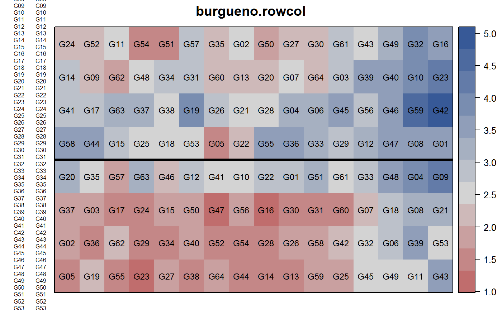
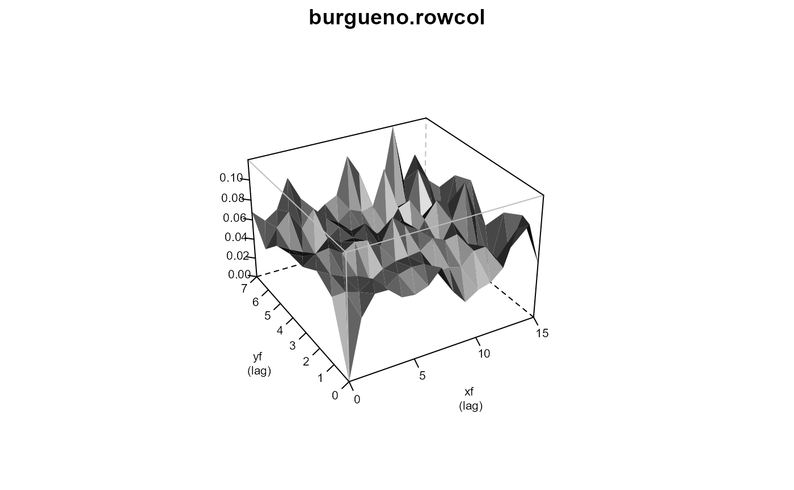

burgueno.rowcol.RdRow-column design
data("burgueno.rowcol")
A data frame with 128 observations on the following 5 variables.
reprep, 2 levels
rowrow
colcolumn
gengenotype, 64 levels
yieldyield, tons/ha
A field experiment with two contiguous replicates in 8 rows, 16 columns.
The plot size is not given.
Electronic version of the data obtained from CropStat software.
Used with permission of Juan Burgueno.
J Burgueno, A Cadena, J Crossa, M Banziger, A Gilmour, B Cullis (2000). User's guide for spatial analysis of field variety trials using ASREML. CIMMYT.
# \dontrun{ library(agridat) data(burgueno.rowcol) dat <- burgueno.rowcol # Two contiguous reps in 8 rows, 16 columns libs(desplot) desplot(dat, yield ~ col*row, out1=rep, # aspect unknown text=gen, shorten="none", cex=.75, main="burgueno.rowcol")libs(lme4,lucid) # Random rep, row and col within rep # m1 <- lmer(yield ~ gen + (1|rep) + (1|rep:row) + (1|rep:col), data=dat) # vc(m1) # Match components of Burgueno p. 40 ## grp var1 var2 vcov sdcor ## rep:col (Intercept) <NA> 0.2189 0.4679 ## rep:row (Intercept) <NA> 0.1646 0.4057 ## rep (Intercept) <NA> 0.1916 0.4378 ## Residual <NA> <NA> 0.1796 0.4238 libs(asreml) # asreml4 # AR1 x AR1 with linear row/col effects, random spline row/col dat <- transform(dat, xf=factor(col), yf=factor(row)) dat <- dat[order(dat$xf,dat$yf),] m2 <- asreml(yield ~ gen + lin(yf) + lin(xf), data=dat, random = ~ spl(yf) + spl(xf), resid = ~ ar1(xf):ar1(yf))#> Model fitted using the gamma parameterization. #> ASReml 4.1.0 Mon Jan 11 17:07:59 2021 #> Spline: design points closer than 0.0007 have been merged. #> Spline: design points closer than 0.0015 have been merged. #> LogLik Sigma2 DF wall cpu #> 1 -11.7667 0.189040 62 17:07:59 0.0 #> 2 -10.9242 0.179307 62 17:07:59 0.0 #> 3 -10.0462 0.167806 62 17:07:59 0.0 #> 4 -9.4052 0.156150 62 17:07:59 0.0 #> 5 -9.2562 0.150710 62 17:07:59 0.0 #> 6 -9.2402 0.148710 62 17:07:59 0.0 #> 7 -9.2394 0.148344 62 17:07:59 0.0#> Warning: Some components changed by more than 1% on the last iteration.#> Model fitted using the gamma parameterization. #> ASReml 4.1.0 Mon Jan 11 17:07:59 2021 #> Spline: design points closer than 0.0007 have been merged. #> Spline: design points closer than 0.0015 have been merged. #> LogLik Sigma2 DF wall cpu #> 1 -9.23934 0.148220 62 17:07:59 0.0 #> 2 -9.23934 0.148225 62 17:07:59 0.0#> Warning: Some components changed by more than 1% on the last iteration.# Scaling of spl components has changed in asreml from old versions libs(lucid) vc(m2) # Match Burgueno p. 42#> effect component std.error z.ratio bound %ch #> spl(yf) 0.09077 0.08252 1.1 P 0 #> spl(xf) 0.08105 0.08198 0.99 P 0.1 #> xf:yf!R 0.1482 0.03119 4.8 P 0 #> xf:yf!xf!cor 0.1153 0.2269 0.51 U 0.2 #> xf:yf!yf!cor 0.00953 0.2414 0.039 U 1.9## effect component std.error z.ratio bound ## spl(yf) 0.09077 0.08252 1.1 P 0 ## spl(xf) 0.08107 0.08209 0.99 P 0 ## xf:yf(R) 0.1482 0.03119 4.8 P 0 ## xf:yf!xf!cor 0.1152 0.2269 0.51 U 0.1 ## xf:yf!yf!cor 0.009467 0.2414 0.039 U 0.9 plot(varioGram(m2), main="burgueno.rowcol")# }